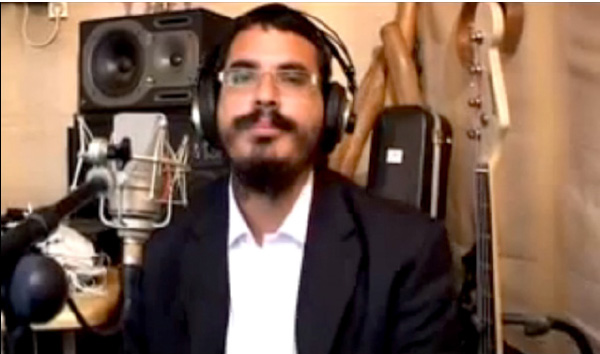

שגיא וייס
מפעל חייו של אברך בודד נוגע בליבותיהם של יהודים מכל רחבי הארץ והעולם ומאיר את בתיהם באור החסידות • הרב שגיא וייס, שהצליח לקרב לדרך החסידות עשרות צעירים, מספר ל’בית-משיח’ על פרויקט הדיסקים המהפכני שהוא יזם ומבצע – וקורא לחסידי חב”ד להצטרף • וגם: על תשובות הרבי מה”מ לכל אורך הדרך, ה’מעשר’ שהציל והסיפו
מפעל חייו של אברך בודד נוגע בליבותיהם של יהודים מכל רחבי הארץ והעולם ומאיר את בתיהם באור החסידות • הרב שגיא וייס, שהצליח לקרב לדרך החסידות עשרות צעירים, מספר ל’בית-משיח’ על פרויקט הדיסקים המהפכני שהוא יזם ומבצע – וקורא לחסידי חב”ד להצטרף • וגם: על תשובות הרבי מה”מ לכל אורך הדרך, ה’מעשר’ שהציל והסיפור שממנו היה ר’ לוי-יצחק מברדיטשוב עושה מטעמים
מאת מרדכי סגל

“התגוררנו אז בנחלת-הר-חב”ד שבקרית מלאכי, ולמרות שמדובר בשכונה חסידית, הרגשתי שאני לא ממצה את עצמי; שהכל ‘יבש’. אמרתי לרעייתי שכחסידי חב”ד עלינו לחפש מקום שליחות כדי לנצל את הפוטנציאל שלנו ואת העובדה שזכינו להיות חסידיו של הרבי מלך המשיח בדור השביעי כדי להפיץ את המעיינות חוצה”, הוא נזכר בשיחה שקיים השבוע עם ‘בית משיח’.
“אמרתי לה שהייתי רוצה לצאת לשליחות בעיר תיירותית בארץ הקודש, דוגמת טבריה או אילת”, מספר וייס.
בבחינת “טרם יקראו ואני אענה”, כבר למחרת בבוקר, בהשגחה פרטית מופלאה, צלצל הטלפון של רעייתו. על הקו הייתה הרבנית העכט מאילת. “אנחנו מחפשים מורה וקיבלתי המלצות עלייך”, אמרה. בני הזוג כתבו לרבי וביקשו את עצתו הקדושה. התשובה הייתה חד-משמעית: “אין מזרזין אלא למזורזין”.
כבר בחודש אלול, שבועות בודדים לאחר השיחה הלילית, הם מצאו עצמם בדרך המפותלת לעיר הדרומית ביותר הממוקמת על שפת הים האדום. בתוך זמן קצר הקים הרב שגיא ישיבה חב”דית במקום יחד עם הרב ארז בנדטוביץ, ישיבה שמיועדת ל’מקורבים’ וחוזרים בתשובה ששמה יצא למרחקים.
עד מהרה נכח השליח הטרי לדעת כי הוא מצליח מאוד בכל נושא ההפצה, “התחלנו לעשות נפשות”, כהגדרתו. לדבריו, מדובר בקרוב לארבעים יהודים שזנחו את חייהם הקודמים והחלו שומרים תורה ומצוות, מתוכם חמישה עשר סירטוקים.
כמי שתמיד חי, כתב, הלחין וניגן מוזיקה, הרגיש הרב שגיא כי הגיע הזמן לפעול גם בתחום הזה. הוא החליט אפוא להקליט ולצלם קליפים לחמשה מתוך שיריו ולהוציא אותם בדיסק. נושא השירים היה סביב ספר התניא ותכניו. הרבי מלך-המשיח העניק את ברכתו באמצעות ה’אגרות קודש’, אלא שממחשבה ורצון למעשה, הייתה ”רק” בעיה אחת: כסף. “הייתי זקוק ל-25 אלף שקלים שפשוט לא היו בנמצא, למרות שניסיתי להשיג אותם מכל מיני מקומות. והנה אני מוצא עצמי לאחר כמה חודשים כותב לרבי שוב, מתוך ייאוש ודכדוך, ומסביר את המצב לאשורו. פירטתי את כל הניסיונות שלי כדי להצליח להשיג את הסכום וציינתי שנראה לי כי כבר לא אצליח לעמוד במשימה.
“פתחתי את הכרך שלתוכו הכנסתי את הפ”נ והתשובה של הרבי הייתה כי הוא מעניק המחאה בתור השתתפות בכל ההוצאות. ידעתי שהרבי רוצה שאמשיך, וכבר יעביר לי את הכסף בדרכיו שלו”…
ההמתנה לא הייתה ארוכה מידי, קצרה משמעותית מכפי שחשב הרב וייס. “למחרת בבוקר הגיע אלי חבר, אברך, שאין בינו ובין עשירות ולא כלום, ונתן בידיי 8,000 שקלים במזומן. הוא ידע שאני מנסה לאסוף תרומות לדיסק אבל הוא האחרון שחשבתי שיוכל להעניק לי כסף למשימה. הייתי בהלם, לא הבנתי מהיכן זה הגיע, אבל הוא הסביר לי כי בתו חשה שלא בטוב והייתה בסכנת חיים והוא, בהחלטה של רגע, החליט ב’שעת רצון’ לתת את הסכום הנכבד. אותו ידיד פשוט אמר לי: ‘קח, תעשה עם זה מה שאתה רוצה’.
“הלכתי מיד לאולפן צילומים והתחייבתי לסכום של 20,000 שקלים, כשביד היה לי מחצית מהכסף: שמונת אלפים שקלים מהחבר ועוד אלפיים שקלים שהצלחתי לקושש קודם לכן. התחלנו לעשות את הקליפ ובמקביל הגיעו עוד כמה המחאות של תרומות”.
בשלב זה הכל היה נראה מבטיח, אלא שבינתיים הגיע חג הפסח והוא הכניס את הרב וייס ל”ברוך אחד גדול”, כהגדרתו. “פתאום המצב הכלכלי השתבש ושוב פעם חשתי שהמשימה נתקעת. כתבתי לרבי שעשיתי את השליחות שלי והתחייבתי לסכום שאין לי אפשרות לעמוד בו, וביקשתי עזרה כדי שלא אתקע. 5,000 שקלים יכולתי להשיג איך-שהוא, אבל עוד חמש נוספים היו בגדר קריעת ים סוף כלכלית עבורי, משהו שאין סיכוי שאצליח בדרך הטבע. הרבי הוסיף ללוות אותי על כל צעד ושעל וכתב כי ‘אין מה להתרשם מהמצב הכלכלי כלל וכלל’.
“למחרת באתי לתת שיעור בישיבה ובסיומו ניגש אלי תלמיד שרצה ממני הסבר על המושג ‘מעשר’. הסברתי לו במה מדובר, וכיוון שהלה עבד בבריכת שחיה, לא חשבתי שיש ממש בשאלה שלו מלבד התעניינות גרידא. הוא הקשיב בענין רב, וכשסיימתי את ההסבר, אמר לי כי ברצונו לתת ‘מעשר’. היות והייתי בטוח שמדובר ב-100-200 שקלים, אמרתי לו שידבר על כך עם ראש הישיבה, הרב בנדטוביץ. אבל הבחור התעקש ושאל אותי אם יש משהו שלשמו אני זקוק לכסף. הסברתי לו כבדרך-אגב על הפרויקט ועל ההסתבכות שלי עם זה, ומיד הדגשתי שמדובר בסכום כסף גבוה. אמרתי זאת כיוון שהייתי בטוח שלא ממנו תצא הישועה.
“התלמיד הלך בירר אצל מי עשיתי את הסרט ומה מספר הטלפון שלו. למול עיניי הנדהמות הוא חייג ושילם בכרטיס אשראי את מלוא הסכום החסר”. שגיא מתרגש גם היום כשהוא מספר את המופת שאירע. “זה היה משהו מדהים. הרבי הוכיח לי שוב ושוב: ‘אני פה ואני צועד איתך לכל אורך הדרך’”.
•
מאז יצא הדיסק הראשון לדרך, הוא מוציא דיסק אחת לארבעה חודשים בממוצע. האחרון בהם, שיצא רק לפני שבועות אחדים וזכה לשם “אדם חדש”. “בדיסק הזה אני מכין את המאזינים לחגים ופותח להם סגנון חשיבה מודרני על כל עניין התשובה, ומה זה אומר לנו בחיי היום יום, אבל במילים המתאימות לאנשי הדור”. עד כה הוא כבר הוציא כששים שירים, חלקם ניתן למצוא ברשת תחת הערך ”שגיא וייס”, ו”זה רק ההתחלה”.
בתוך זמן קצר החליט לממש את הפוטנציאל הרב שלו בשירה ובמסירת שיעורים, והחליט להקליט אחת לחודש דיסק ובו ענייני דיומא – חג החל באותו חודש או פרשת שבוע שמפסוקיה ניתן ללמוד דרכים בעבודת ה’ – כולל שירים שהוא הלחין ומבצע. הכנת דיסק כזה, שהמהדורה ה-13 שלו רואה אור בימים אלו, דורשת ממנו עבודה רבה ומאומצת: “הכול כמובן מבוסס על דבריו של הרבי מלך-המשיח, אבל זה לא פשוט כפי שזה נשמע. לעיתים אני עובר על 20-30 מאמרים ושיחות כדי למצוא את ה’נקודה’. זה בכלל לא ‘נשלף מהשרוול’ וכל דיסק הוא פרי עבודה רבה”.
הדיסק המיוחד, היוצא כאמור מידי חודש, הפך למצרך קבוע בבתי אלפי בני אדם, מרביתם אינם שומרים תורה ומצוות, “אבל יש גם חב”דניקים שאוהבים להקשיב לתכנים, בעיקר נשים ובני נוער”. מידי חודש נחשפים אליו עוד ועוד – והביקוש הולך וגובר.
•
הרב שגיא וייס עצמו חזר בתשובה כשהיה בן 12. מאז שהוא זוכר את עצמו חיפש משמעות לחייו, משהו רוחני, שייתן לו טעם של עוד. למזלו, בני משפחה חסידי חב”ד קירבו אותו לתורת החסידות והוא עלה בהתמדה על המסלול המוביל בית א-ל. “כמי שהגיע מ’שם’, אני יודע כמה דיסק שמע כמו שאני מוציא כעת, חסר בשוק. הבעיה הגדולה היא שמאוד קשה להביא אנשים לשיעור תורה, כל אחד מסיבותיו הוא: יש שלא יכולים להגיע בשעה המיועדת, אחרים לא חשים בנוח בגלל הסביבה ועוד סיבות רבות ומגוונות. המעלה בדיסק שמע היא שכל אחד יכול להקשיב בשעה ובמקום הנוח לו, וזו בדיוק מטרתי, להגיע לקהל מקסימום של אנשים”.
ותגובות?
“אני מקבל ברוך ה’ המון תגובות. רק מקודם קיבלתי שיחת טלפון מאשה שמקשיבה להתוועדויות המוקלטות הללו שמועברות בשפה קלה ובגובה העיניים. היא סיפרה כי החליטה להקשיב מעתה רק לתחנות רדיו דתיות. במקרה אחר, חבר החליט להעניק את הדיסק לקרובי משפחה רפורמים והם מאזינים לו בקשב-רב מדי חודש בחדשו ומתחילים לגלות סימני התעוררות והתקרבות לתורה ומצוותיה.
“היה מישהו שפגש אותי לאחרונה”, הוא מספר ובת שחוק עולה על פניו, “והוא סיפר לי כי שמע לעצתי ולא קנה כלום בפסח. לא הבנתי את כוונתו ואת פשר דבריו. חלפה עוד דקה ארוכה עד שנזכרתי שאמרתי באחד השיעורים המוקלטים שלא לקנות במקומות לא כשרים בחג הפסח, כדי לא להכשל, אז הוא לקח את זה צעד אחד קדימה – בתמימות של יהודי. ר’ לוי-יצחק מברדיטשוב היה עושה מטעמים מהפשטות הזו”, הוא בטוח.
בכלל, הרב שגיא משתדל, גם זה בעקבות הוראה של הרבי, לדבר, ולו בקצרה, על מצוות מעשיות. “אדם שאיננו שומר תורה ומצוות לא מסנן את הדברים שהוא שומע או קורא בכלי התקשורת. מבחינתו, מדובר באמת לאמיתה. כך גם לענייננו: כשאני מדבר על התחזקות בנושא מסוים, אז המאזין נמצא ברגש של התעוררות, זה יכול להיות בגלל שיר יפה, או סיפור שסיפרתי או גם בגלל ווארט שדיבר ללבו, הוא נכנס לרגש המתאים ומיד יפעל – ואין איתנו יודע עד כמה גדולה ההשפעה”.
לפני כחצי שנה בחרו הזוג וייס, בברכת הרבי, לעזוב את אילת. “הבנתי שבמקום הזה לא אוכל להפיץ את הדיסקים ולנצל את הפוטנציאל שלהם בהפצת יהדות בקרב מאות אלפי יהודים, וקיבלנו החלטה לא קלה לעבור למרכז הארץ. הגענו אל העיר רחובות, כדי ש’תהא הארץ נוחה להיכבש’ ברעיונות החסידות מאוצרו הבלתי-נדלה של הרבי…
הרב וייס הוא איש מעשי וככזה הציב לעצמו מטרה: להפיץ את קבצי השמע שעליהם הוא עמל רבות לכל בית יהודי. “אני בטוח שגם שלוחים זקוקים ל’דחיפה’ כזו כדי להגיע לכמה שיותר אנשים וגם כדי לחזק את ידידיהם ומקורביהם. מניסיון ומהתגובות הרבות שאני מקבל ממי שנחשף לדיסקים, כמו גם משלוחים שעושים בהם שימוש, אני מבין שטמון בהם פוטנציאל רב”.
ההבנה הזו גרמה לו לא להתעסק כמעט בהופעות ובהלחנת שירים – דבר שאותו עשה בעשרים וחמש השנים האחרונות – ולהתמקד בהגדלת מערך ההפצה. למרות שמדובר על הוצאה כלכלית כבירה, הוא נחוש להמשיך ואפילו יוצא במבצע: “מנוי לדיסק עולה 20 שקלים. בעקבות הרצון והכמיהה שלי שכמה שיותר יהודים ישתפו איתי פעולה ויקבלו ‘תאבון’ בנושא הפצת המעיינות הזו, המחיר יורד לעשרה שקלים לכל מי שרוכש שלוש יחידות ומעלה כדי להפיץ למקורבים, ידידים, בני משפחה וכדומה. בחישוב פשוט: ב-100 שקלים בחודש, יכול כל אחד, גם מי שאינו בעל ניסיון או רקע בקירוב יהודים, לקרב לקדוש ברוך הוא ולרבי מלך המשיח עשר משפחות. אני בטוח שבבואנו ליום הדין, אין סנגור גדול מזה”, אומר האברך החב”די הבלתי נדלה.
לסיום, הוא רוצה להבהיר כי “רבים שואלים אותי איך הצלחנו בסייעתא דשמיא לגרום למספר גדול כל כך של חוזרים בתשובה במהלך תקופת שליחותנו באילת. הסוד הוא”, מגלה ר’ שגיא, “נעוץ בדבר אחד: התמדה, כפי שאמר הרבי הריי”צ נ”ע ‘חזקה על תעמולה שאינה חוזרת ריקם’. פשוט למדנו והקשבנו והיינו לעזר ולסיוע בכל הענינים שנזקקו לנו, עד שזכינו ב”ה לראות פירות. את המוטו הזה ‘חזקה על תעמולה’ כתב לי הרבי מה”מ בנוגע למפעל הדיסקים: לא מדובר כאן רק על האיכות והכמות שכל חסיד חב”ד צריך לראות זכות וחובה להעביר לכל מי שהוא מכיר, אלא בעיקר על ההתמדה. אדם לא יכול להשאר אדיש כשמדובר על משלוח קבוע. כמובן שאינני יכול להבטיח הצלחה, אבל מניסיון העבר ולאור ברכותיו של הרבי כל העת, אני בטוח שמדובר בפרויקט חשוב שיחיש את הגאולה ותיכף ומיד ממש”.
להזמנות דיסקים וליצירת קשר: 0525112062